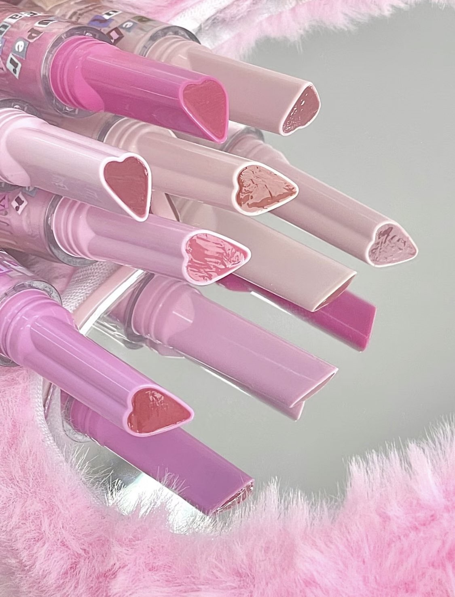
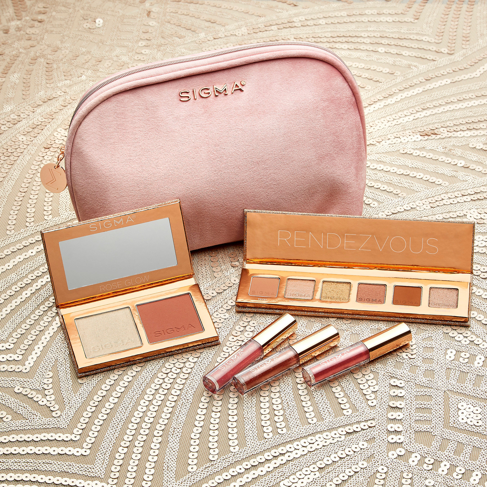
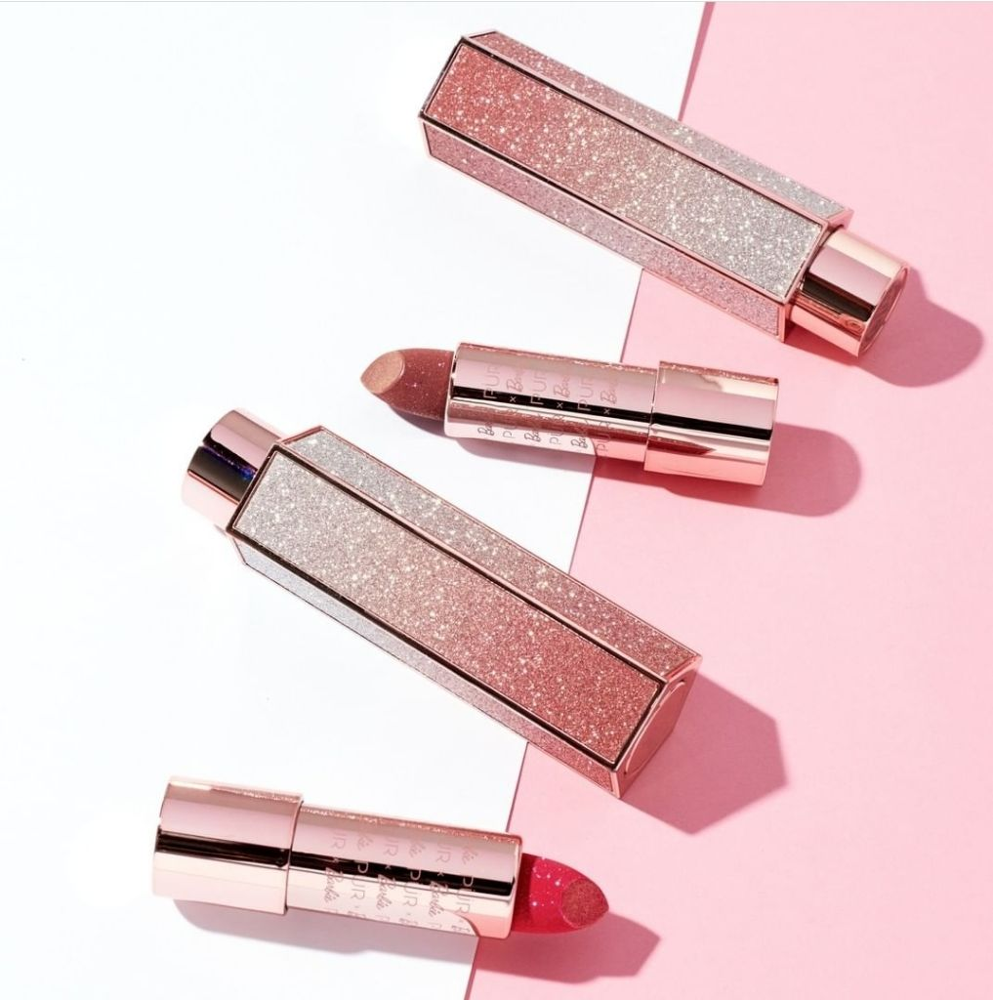

Here is a information about lipgloss from website:
  Lip gloss is a cosmetic used primarily to give lips a glossy luster, and sometimes to add a subtle color. It is distributed as a fluid or a soft solid (not to be confused with lip balm, which generally has medical or soothing purposes, or lipstick, which generally is a solid, cream-like substance that gives off a more pigmented color.) The product is available in ranges of opacity from translucent to solid and can have variously frosted, glittery, glossy, and metallic finishes.